Next: Three-dimensional meshing Up: Mesh Generation Previous: Mesh Generation Contents
In two dimensions, GRUMMP follows Shewchuk's modification to Ruppert's scheme fairly closely, except that we exercise more precise control over cell size and grading and extend the scheme to produce guaranteed-quality meshes from domains with curved boundaries.
Ruppert's scheme [14,15] begins with a constrained
Delaunay triangulation.4.1 The mesh quality is improved through point insertion. Points are
inserted at the circumcenter of badly-shaped cells, cells that have
an angle less than 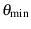 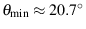
Shewchuk [16] showed that a
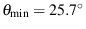 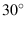
|
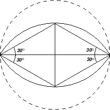
|
Ruppert's algorithm can be started either with a Delaunay triangulation or a constrained Delaunay triangulation. The latter does not pose a problem because Ruppert's original encroachment rule guarantees that no vertex will be inserted outside a boundary edge.4.2 A Delaunay triangulation containing all the boundary points inside a larger bounding box is first created. Boundary edges are recovered by swapping; this approach always succeeds for two-dimensional polygonal boundaries. The triangles lying outside the domain are then removed, leaving a constrained Delaunay triangulation. Initial triangulations are created by a Mesh2D constructor in src/2D/Mesh2D.cxx, using geometric information stored in a geometry object of type Bdry2D.
GRUMMP uses the Delaunay insertion method of Watson [17]. First, the code lists all cells that contain the new vertex in their circumcircle. These cells are then removed from the mesh, and the faces of the resulting hull are connected with the newly inserted point. This insertion method preserves the Delaunay nature of the mesh; no swapping is needed after the insertion. If a boundary edge is part of the hull, a check is made to ensure that the new vertex will not encroach on it. If it does, the point is not inserted. Vertices lying inside the diametral circle of the edge are removed, and the boundary edge is split at its geometric midpoint. GRUMMP uses Watson insertion for this split as well. The actual insertion code is found mostly in src/2D/InsertWatson2D.cxx, while the driver for Ruppert's scheme is in src/2D/Ruppert.cxx.
GRUMMP uses a more flexible definition of geometric length scale than
Ruppert's; for implementation details and proofs of mesh quality and
size-optimality, see Ollivier-Gooch and Boivin [11].
GRUMMP computes a geometric length scale based on the local
feature size. The local feature size was used by Ruppert to prove
termination of the original algorithm, and is defined as the radius
of the smallest circle centered at a point that touches two disjoint
parts of the domain boundary. We defined the length scale 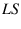 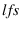
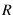
and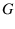
are constants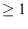
, and points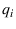
are neighbors to point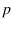
. The first constant, , controls the ratio of input feature size to final mesh boundary edge length, with finer boundary discretization for larger values of . The other constant, , is used to control how rapidly the cell size can change with distance. This is an explicit imitation and generalization of the grading properties of the local feature size. A larger value of results in slower increase in cell size over the same distance. The value of is stored at every vertex location.
Ruppert's scheme can be easily modified to split cells that are too
large according to the definition of length scale in Equation 4.1,
in addition to splitting those that are badly shaped. A cell is considered
too large whenever the ratio of its circumradius to the average
of its vertices is greater than
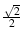
Length scale is computed and manipulated by code in src/base/Length.cxx.
This section is a digest of the description found in Boivin and Ollivier-Gooch [11]. The main result of that paper was to demonstrate that it is possible to generate a guaranteed-quality triangular mesh in a domain with curved boundaries. Modifications to the meshing code itself are relatively slight, although geometric modeling is significantly more complex.
Interested readers are encouraged to refer to that paper for full details, including implementation issues regarding the curve types implemented in GRUMMP.
To enable meshing from general curved boundaries, GRUMMP uses a framework in which the mesh generation code makes no assumptions about the underlying geometry of boundary patches. This implies a generic interface between mesher and geometry, in which the mesher only needs the results of several geometric queries. This is illustrated in Figure 4.2.
Whenever GRUMMP needs information about the boundary, a “question” is passed on to the proper type of boundary patch. Each boundary patch type knows how to answer all of these questions, and the answer is then passed back to the algorithm. This provides a transparent access to potentially any type of boundary patch. Using object-oriented programming, this generic interface can be implemented by using a common base class for all boundary data, with implementation of specific geometric queries in derived boundary data classes.
The information required for the successful implementation of Ruppert's algorithm -- curve midpoint, curvature, and original discretization information -- is described in Sections 3.2 to 3.6. Several other queries are required to determine the appropriate mesh length scale , but will not be discussed further here.
So far, classes for lines, circles, arcs, cubic parametric curves, and interpolated splines have been written. New types of boundary patches can be added by providing the proper “answers” for the given boundary patch. These patch definitions can be found in src/2D/Bdry*.cxx.
GRUMMP must be able to work with curved as well as linear patches, so a new way of determining where splits happen along a boundary patch is necessary. We first make the observation that patches with little orientation change need few, long edges for accurate geometric representation. Linear patches have no orientation change; they can be represented accurately with just one edge. In contrast, regions of a curve with a large change in orientation require a greater number of shorter edges. We must also make sure that small amplitude sine-like curves are discretized appropriately. This suggests we should use the total variation of the tangent angle of a curve to determine where to split a boundary patch.
The total variation 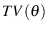
Note that there is no need to compute the integral; one simply needs to compare the orientation of the curve's tangent vector at carefully chosen points along the boundary patches to get the exact value of . More details are given for each type of boundary patches in Boivin and Ollivier-Gooch [1].
To obtain the initial Delaunay triangulation, each boundary patch must be initially discretized in some way. Since the exact shape of the boundary is only known by the boundary patches, the initial discretization of the corresponding curve must be computed by the patches themselves. At this point in the meshing process, we represent curves with as few edges as possible in order not to introduce artificial small features in the mesh. However, we must make sure that a valid and exact representation of the domain will be obtained and that the rules regarding the location of points inside the diametral lenses are also followed.
An arbitrary discretization of a spline curve is shown in Figure 4.3. We wish to triangulate outside (above) the curve. Ruppert's scheme guarantees that no vertex will be inserted inside (below) the boundary edges. We also want to make sure that no vertex will be inserted in the regions inside the curve but outside of the boundary edges (the shaded area in Figure 4.3). This is to prevent an invalid discretization, as the vertex inserted in the shaded area would ultimately lie outside the domain once the boundary is well-resolved.
|
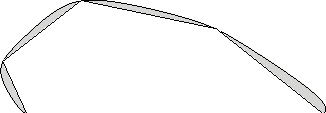
|
This area can be protected by making sure that the diametral lenses of the boundary edges completely include the curve boundary. Since points are never inserted inside the diametral lenses, this will protect the shaded region from point insertion. It is easy to show that the maximum allowable total variation in orientation between vertices is . GRUMMP boundary patches determine their initial discretization by arranging vertices at equal intervals of so that the maximum orientation change condition is met.
Due to the very coarse representation of the boundary patches during edge recovery, some precautions must be taken in order to get a valid initial constrained Delaunay triangulation. The edge recovery process must be modified since simple recovery through swapping will fail in some cases. Judicious use of vertex insertion is required in these cases to obtain a valid initial triangulation. The resulting edge recovery algorithm is summarized in Figure 4.4.
Point insertion in the mesh, as well as on the boundary, is still done using Watson's method. However, curved boundaries modify the way that boundary edges are split. Instead of splitting at the average location of the edge's vertices, the location of the new boundary vertex is determined by the boundary patch itself. The “midpoint” between two vertices is now found using the total variation of the tangent angle. The general technique is to first find the total variation of the tangent angle between the boundary edge's vertices and . The midpoint will be located at the point on the curve where between and and between and is equal. This ensures that the new point is always located on the boundary and that regions of the curve with higher curvature will be discretized with more edges.
If the curvature over a given boundary edge is (almost) zero, the orientation change is negligible. In these cases, the split is made according to arclength. This ensures linear patches are split in the same fashion as before, and it also handles curves that have particularly flat regions.
Care must be taken when two curved patches are near each other, because the discretization of one patch may intersect the neighboring patch. Insertion on the latter can result in points outside the domain unless the patches are both split, and in the proper order.
Whenever a boundary edge is split, the length scale 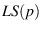 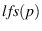 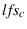
where
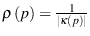